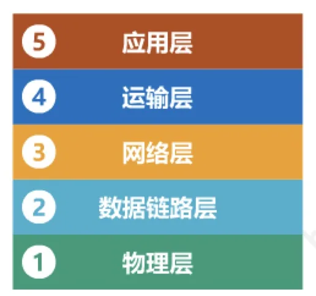
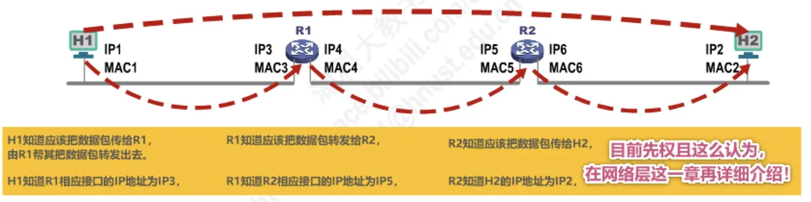

计算机通信与网络 · 第 3 章 数据链路层
3.7 MAC地址、IP地址以及ARP协议（2） —— IP地址
上一节看到，MAC 地址能区分同一广播信道上的不同接口，却区分不出「网络」。当许多网络互连成因特网时，就必须再引入一层地址——网际层的 IP 地址。本节说明 IP 地址标识了哪两部分信息、它与 MAC 地址在体系结构中各处于什么位置，最后用一个典型例子把数据包在逐段链路上转发的过程中两种地址的变化彻底讲清楚，并引出下一节的 ARP 协议。
1. IP 地址标识什么
承接上一节：MAC 地址是数据链路层地址，固化在网卡的 EEPROM 中，又称硬件地址；它标识的是网络上的各个接口而不是设备，并且可以用第一字节的 b0、b1 位区分全球管理/本地管理与单播/多播。
而 IP 地址是因特网（Internet）上的主机和路由器所使用的地址，它用于标识两部分信息：
- 网络编号：标识因特网上数以百万计的网络；
- 主机编号：标识同一网络上不同主机（或路由器各接口）。
把两段信息拼在一起，一个 IP 地址就同时回答了「你在哪个网络」和「你是这个网络里的哪一台」两个问题。例如图中校园网一侧的地址都是 192.168.1.x，说明它们属于同一个网络；而路由器 R5 面向另一个网络的那个接口用 192.168.0.254，说明它属于另一个网络。路由器正是靠这种「一个接口一个网络编号」的方式把多个网络连接起来的。
2. 为什么有了 MAC 地址还需要 IP 地址
答案在于两种地址的「视野」不同：MAC 地址不具备区分不同网络的功能。它只在同一个广播信道（同一个网络）内保证唯一，一旦跨越多个网络，光凭 MAC 地址就无从判断目的主机在哪个网络里、该往哪个方向转发。
于是出现两种使用场景：
- 如果只是一个单独的网络、不接入因特网，可以只使用 MAC 地址——但这并不是一般用户的应用方式；
- 如果主机所在的网络要接入因特网，则 IP 地址和 MAC 地址都需要使用。
换句话说，MAC 地址解决「在一条链路上把帧交给谁」，IP 地址解决「在互连的众多网络中把数据包送到哪个网络、哪台主机」。两者是配合关系，而不是替代关系。
3. 从网络体系结构看 IP 地址与 MAC 地址
把两种地址放回体系结构，它们的位置就一目了然了。发送方自上而下逐层封装：
- 应用层产生应用层报文；
- 运输层加上运输层首部；
- 网络层再加上网络层首部，其中就装着源 IP 地址和目的 IP 地址；
- 数据链路层最后加上链路层首部和链路层尾部，首部中装着源 MAC 地址和目的 MAC 地址，然后以比特流的形式发送到链路上。
所以，IP 地址属于网络层首部，MAC 地址属于链路层首部；每经过一段链路，链路层首部都要换新，而网络层首部在整个转发过程中被原样保留——这正是下一节结论的由来。

4. 数据包转发过程中两种地址的变化
下面这个例子是本节的核心。主机 H1（IP1、MAC1）要发送数据包给主机 H2（IP2、MAC2），中间经过路由器 R1 和 R2：
- R1 有两个接口：面向 H1 一侧的接口是 IP3、MAC3，面向 R2 一侧的接口是 IP4、MAC4；
- R2 也有两个接口：面向 R1 一侧的接口是 IP5、MAC5，面向 H2 一侧的接口是 IP6、MAC6。
数据包每到一段链路就重新封装一次链路层首部，三段链路上地址的取值如下：
| 链路 | 源 IP | 目的 IP | 源 MAC | 目的 MAC |
|---|---|---|---|---|
| H1 → R1 | IP1 | IP2 | MAC1 | MAC3 |
| R1 → R2 | IP1 | IP2 | MAC4 | MAC5 |
| R2 → H2 | IP1 | IP2 | MAC6 | MAC2 |
由此得到两条重要结论：
- 数据包转发过程中源 IP 地址和目的 IP 地址保持不变；
- 数据包转发过程中源 MAC 地址和目的 MAC 地址逐个链路（或逐个网络）改变。

5. 下一跳的 MAC 地址从哪儿来
问题也随之而来。以 H1 为例：
- H1 知道应该把数据包传给 R1，由 R1 帮其转发出去（这一步是如何判断的，将在第 4 章网络层详细介绍）；
- H1 知道 R1 相应接口的 IP 地址为 IP3，但不知道其对应的 MAC 地址是什么；
- 同理，R1 知道应该把数据包转发给 R2，也知道 R2 相应接口的 IP 地址为 IP5，但不知道其对应的 MAC 地址；
- R2 知道应该把数据包传给 H2，也知道 H2 的 IP 地址为 IP2，但同样不知道其对应的 MAC 地址。
可见，转发链上的每一跳都面临同一个需求：已知下一跳的 IP 地址，要求出它的 MAC 地址，因为链路层首部必须填上 MAC 地址才能把帧发出去。完成这个「IP 地址 → MAC 地址」映射的，正是下一节要讲的 ARP 协议。
本节小结
- IP 地址是因特网上的主机和路由器所使用的地址，标识两部分信息：网络编号（区分数以百万计的网络）和主机编号（区分同一网络中的不同主机或路由器接口）；
- MAC 地址不能区分不同的网络：单独的网络不接入因特网时可以只用 MAC 地址，而接入因特网就必须 IP 地址与 MAC 地址同时使用；
- 从体系结构看，IP 地址在网络层首部，MAC 地址在链路层首部；封装顺序是应用层报文 → 运输层首部 → 网络层首部 → 链路层首部与尾部 → 比特流；
- 数据包逐段链路转发时，源 IP 与目的 IP 保持不变，源 MAC 与目的 MAC 逐个链路改变（H1→R1 用 MAC1→MAC3，R1→R2 用 MAC4→MAC5，R2→H2 用 MAC6→MAC2）；
- 每一跳都需要「已知下一跳 IP 地址、求出其 MAC 地址」，这一工作由 ARP 协议完成，见 3.7.3 节。